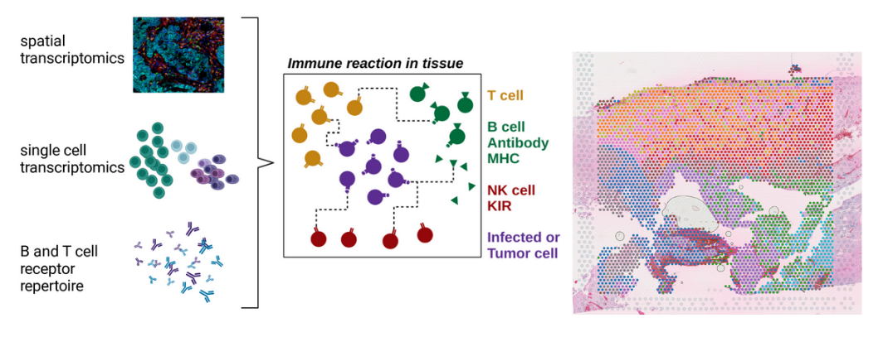
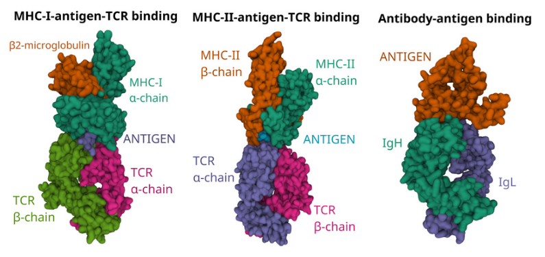

Heterogeneity of human immune responses in cancer.
Adaptive immune responses in solid tumours
The presence of adaptive immune cells in solid tumours is typically associated with improved patient survival and response to immunotherapy. The adaptive anti-tumor immune response extends beyond the paradigm in which CD8 T cells can recognize tumour antigens and eliminate tumour cells by means of cellular cytotoxicity. In fact, a variety of different adaptive immune cells are educated towards tumour antigens in draining lymph nodes or in lymphoid aggregates also known as tertiary lymphoid structures that are formed within a tumour itself.
Our research group aims to understand the molecular architecture and cellular dynamics within tertiary lymphoid structures by integrating high-dimensional data from spatial transcriptomics, single-cell transcriptomics and adaptive immune receptor repertoire profiling. We collaborate with multiple clinical partners to study adaptive immune responses in different types of tumours.
Human immunogenetics
Immune molecules such as B and T cell receptors, human leukocyte antigens (HLAs) and killer Ig-like receptors (KIRs) are encoded in the most diverse genetic loci in the human genome. Bioinformatic methods commonly used to analyse immune responses in large patient cohorts do not take into account this immunogenetic diversity, which leads to erroneous quantification of important immune mediators and impaired inter-donor comparability. Our research group develops robust bioinformatic methods and software tools for reproducible research on human immune responses and immunogenetic diversity in multidimensional immunological datasets.
